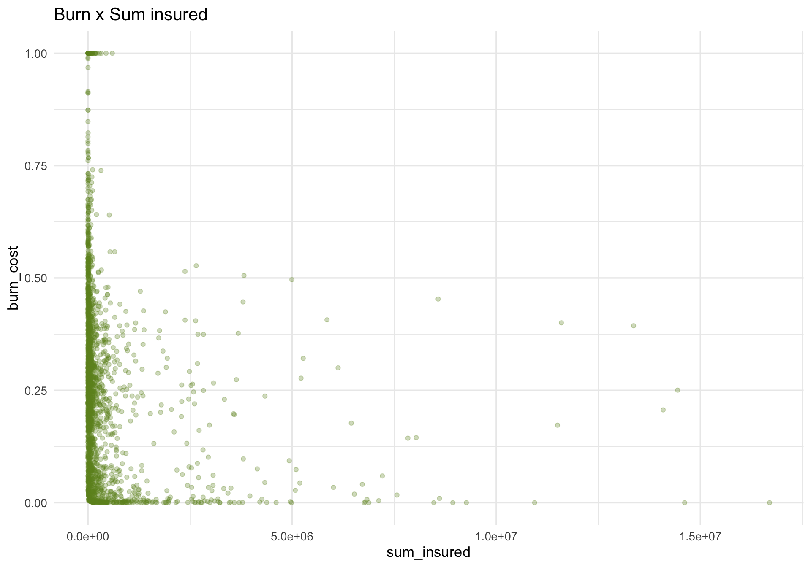
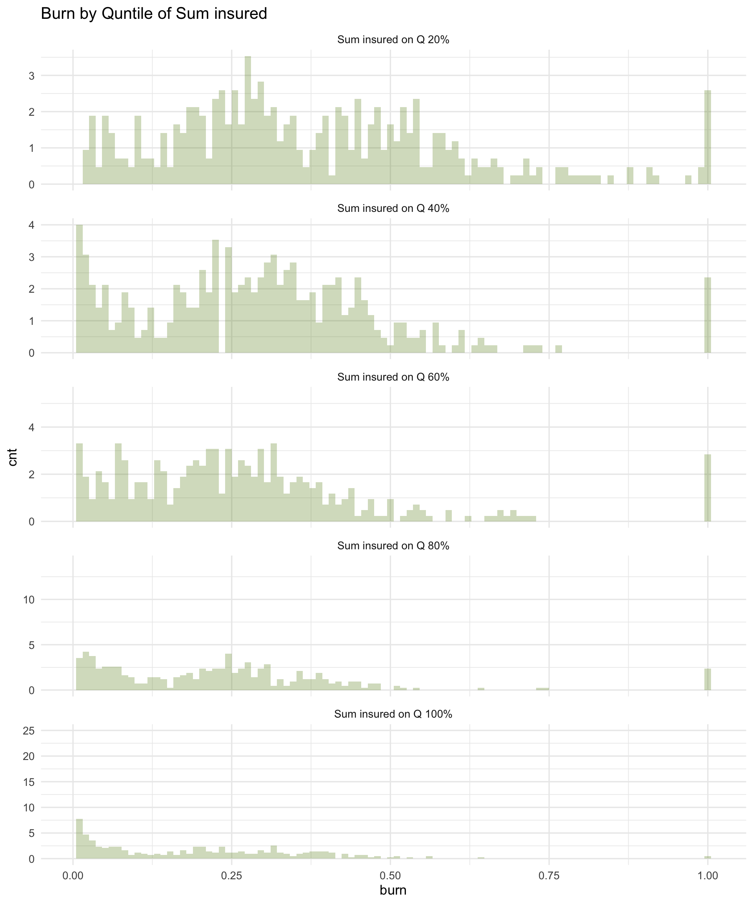
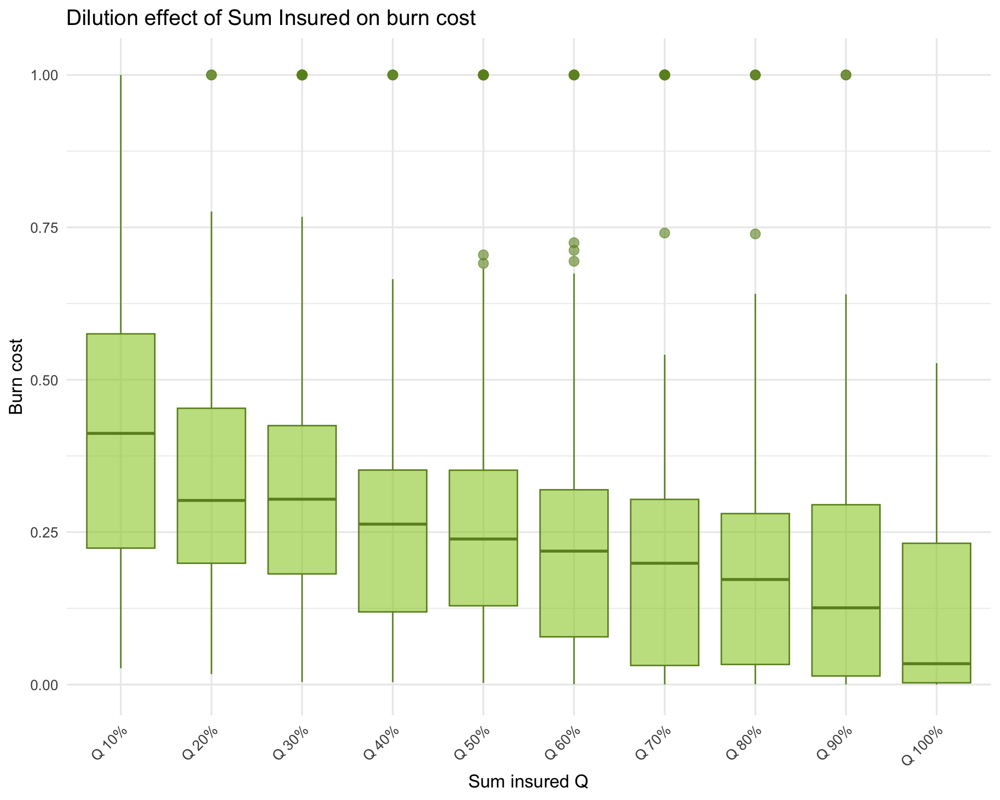
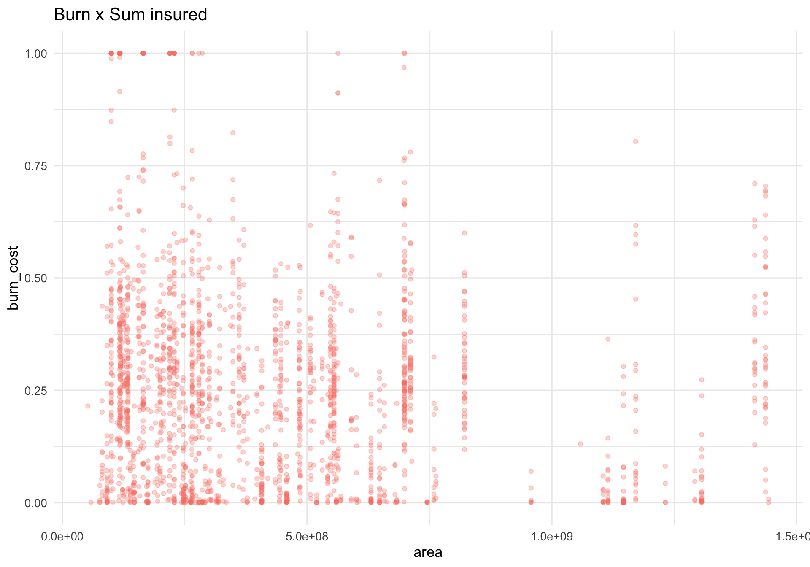

Dilution Effect
We investigate whether the large number of small—but nonzero—burn cost values can be explained by a dilution effect. In other words, small burn costs may result when actual losses are spread over very large insured amounts or large geographic areas.
A substantial fraction of burn costs falls between 0 % and 1 %. Such tiny damages seem unlikely as individual claims—few policyholders would report losses that small in isolation. We therefore hypothesize a dilution effect, meaning that real damage exists but gets “diluted” when spread across large sums insured or extensive geographic areas.
To test this hypothesis, we use two proxies for aggregation scale:
Sum insured
Geographic area
Dilution Effect on Sum Insured
First, we visualize the raw relationship between burn cost and sum insured. The scatterplot shows that there is no obvious linear correlation—this is expected, since both variables exhibit strong heteroskedasticity.

Next, we slice burn cost by quantiles of sum insured. In other words, we group policies into bins by sum insured and then compare the burn cost distributions within each bin. We choose five bins (quantiles at 20 %, 40 %, 60 %, 80 %, 100 %). We see that as the sum insured increases, the “center of mass” of the burn cost distribution shifts left—indicating smaller relative damages on larger policies.

To display this more succinctly, we use box plots of burn cost across deciles of sum insured. These box plots confirm the trend: burn cost tends to be lower (and more tightly clustered near zero) in the higher-insured groups.

Dilution Effect on Geographic Area
Next, we examine whether a similar dilution effect occurs when damage is spread over larger geographic areas. We merge our burn dataset with municipality area information and then plot burn cost versus area. As before, the scatterplot alone does not reveal a clear trend, due to heteroskedasticity.

We then slice burn cost by quantiles of geographic area (again using five bins). The histograms show a shift toward lower burn costs as area increases, but this effect is much weaker than what we observed for sum insured.
Box plots of burn cost by decile of area confirm the finding: there is only a slight tendency for burn cost to decrease as area grows. Overall, the dilution effect on area is negligible compared to the effect on sum insured.
Results
There is a strong dilution effect with respect to sum insured, whereas the effect of geographic area is negligible or much weaker. We conclude that the clustering of burn cost values near zero primarily arises from dilution over large policy amounts, rather than being a natural effect. Now that we have established this dilution effect, we proceed to explore its statistical implications in the next chapter.